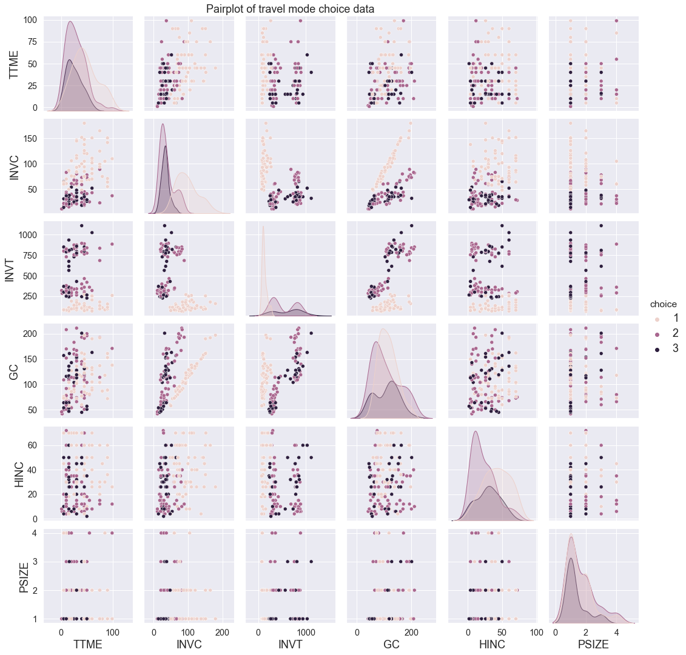
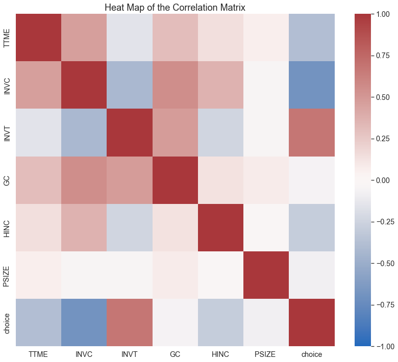
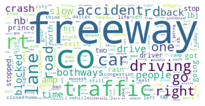
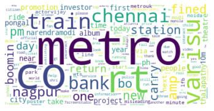

import numpy as np
import pandas as pd
import matplotlib.pyplot as plt
import seaborn as snsExploring Data
Exploring Data
First, import necessary Python packages for data visualization.
EDA for record data
In this part, I use different types of visualization methods to show the distribution and correlation in the “travel mode choice” data.
First, read the csv file “travel_mode_choice.csv” and have a look at this data:
df2=pd.read_csv("travel_mode_choice.csv")
df2.iloc[:10,:]| TTME | INVC | INVT | GC | HINC | PSIZE | choice | |
|---|---|---|---|---|---|---|---|
| 0 | 40 | 20 | 345 | 57 | 20 | 1 | 2 |
| 1 | 45 | 148 | 115 | 160 | 45 | 1 | 1 |
| 2 | 20 | 19 | 325 | 55 | 26 | 1 | 2 |
| 3 | 15 | 38 | 255 | 66 | 26 | 1 | 2 |
| 4 | 20 | 21 | 300 | 54 | 6 | 1 | 2 |
| 5 | 45 | 18 | 305 | 51 | 20 | 1 | 2 |
| 6 | 10 | 28 | 305 | 75 | 72 | 2 | 2 |
| 7 | 20 | 21 | 305 | 54 | 6 | 1 | 2 |
| 8 | 45 | 45 | 465 | 116 | 10 | 2 | 2 |
| 9 | 90 | 142 | 105 | 153 | 50 | 1 | 1 |
Create a pairplot to figure out the distribution within every two X features:
sns.set_theme(font_scale=1.3)
plot1=sns.pairplot(
data=df2,
hue='choice'
)
FS=18
plot1.axes[0,0].set_ylabel('TTME',fontsize=FS)
plot1.axes[1,0].set_ylabel('INVC',fontsize=FS)
plot1.axes[2,0].set_ylabel('INVT',fontsize=FS)
plot1.axes[3,0].set_ylabel('GC',fontsize=FS)
plot1.axes[4,0].set_ylabel('HINC',fontsize=FS)
plot1.axes[5,0].set_ylabel('PSIZE',fontsize=FS)
plot1.axes[5,0].set_xlabel('TTME',fontsize=FS)
plot1.axes[5,1].set_xlabel('INVC',fontsize=FS)
plot1.axes[5,2].set_xlabel('INVT',fontsize=FS)
plot1.axes[5,3].set_xlabel('GC',fontsize=FS)
plot1.axes[5,4].set_xlabel('HINC',fontsize=FS)
plot1.axes[5,5].set_xlabel('PSIZE',fontsize=FS)
plt.setp(plot1._legend.get_texts(), fontsize=FS)
plot1.axes[0,2].set_title("Pairplot of travel mode choice data", fontsize=18)
print(type(plot1))
plt.show()<class 'seaborn.axisgrid.PairGrid'>
In this pariplot, three categories in target variable, “air”, “train” and “bus” are represented by three different colors. Charts on the diagonal are distribution plots of each variable while other charts are 2-D scatter plot for every combination of variables. We can see that data of three different categories seems to have different distribution.
Then, I use a heat map to visualize the correlation matrix of this data:
print(df2.corr())
fig,axes = plt.subplots(1, 1, num="stars",figsize=(14, 12))
axes = sns.heatmap(df2.corr(), vmin=-1, vmax=1,cmap="vlag")
axes.set_title("Heat Map of the Correlation Matrix", fontsize=18)
plt.show() TTME INVC INVT GC HINC PSIZE choice
TTME 1.000000 0.464165 -0.152421 0.309941 0.142177 0.070189 -0.384252
INVC 0.464165 1.000000 -0.429092 0.550372 0.362047 -0.040891 -0.693269
INVT -0.152421 -0.429092 1.000000 0.484061 -0.241788 -0.045246 0.678051
GC 0.309941 0.550372 0.484061 1.000000 0.131839 0.079697 -0.057761
HINC 0.142177 0.362047 -0.241788 0.131839 1.000000 -0.017023 -0.294000
PSIZE 0.070189 -0.040891 -0.045246 0.079697 -0.017023 1.000000 -0.078319
choice -0.384252 -0.693269 0.678051 -0.057761 -0.294000 -0.078319 1.000000
This heat map shows the correlation within all the X features and the target variable. A red grid indicates that two variables have very high correlation value, blue grids represent for negative correlation, and white grids mean that there do not exist significant correlation between two variables. In this plot, red grids only exist on the diagonal.
EDA for text data
In this part, I will use wordcloud to visualize the most frequent words that exist in the text data. In the wordcloud plot, bigger fontsize means higher frequency of a word.
First, read the cleaned text data “free_mtr_text_data.csv”.
Then, split into two dataframe according to the label.
df3=pd.read_csv("free_mtr_text_data.csv")
freeway=df3.loc[df3["label"]=="freeway",]
metro=df3.loc[df3["label"]=="metro",]Plot the wordcloud of text data related to “freeway”:
from wordcloud import WordCloud
words = []
for sen in freeway['text']:
for word in sen.split(" "):
if len(word)>1:
words.append(word)
words_str=' '.join(words)
word_cloud = WordCloud(collocations = False, background_color = 'white').generate(words_str)
plt.imshow(word_cloud, interpolation='bilinear')
plt.axis('off')
plt.savefig('wordcloud.png')
Plot the wordcloud of text data related to “metro”:
words = []
for sen in metro['text']:
for word in sen.split(" "):
if len(word)>1:
words.append(word)
words_str=' '.join(words)
word_cloud = WordCloud(collocations = False, background_color = 'white').generate(words_str)
plt.imshow(word_cloud, interpolation='bilinear')
plt.axis('off')
plt.savefig('wordcloud.png')
From the wordcloud of “freeway”, we can find words like traffic, car and driving, because freeway is built for cars to drive and sometimes people may encounter the traffic jam. By contrast, the wordcloud of “metro” contains words including train and station rather than words relevant to driving. It makes sense because metro has stations and specific routes, similar to the train.